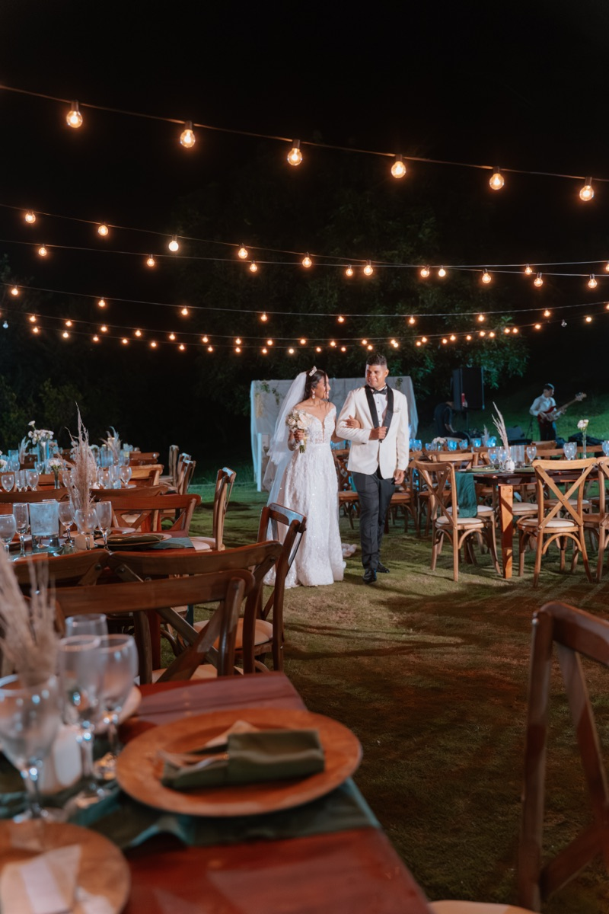

Carlos López
Fotógrafo de bodas en Cartagena
Descubrir
“Hay quienes ven una boda como una sucesión de momentos programados. Yo la veo como una coreografía de emociones genuinas: una mirada cómplice, la risa que desborda los nervios, el abrazo que detiene el tiempo.”
Mi Visión
Soy Carlos López. Comunicador audiovisual desde 2022 y fotógrafo de bodas en Cartagena con una década de trayectoria dedicada a entender el latido de cada celebración.
Mi enfoque huye de lo convencional no por romper esquemas, sino porque creo que las mejores historias merecen contarse desde la verdad, la espontaneidad y una alegría desbordante que contagie a quienes están frente a la cámara.
Cada pareja guarda un universo único. Mi trabajo es descifrarlo, transformar la luz de nuestra ciudad en arte y entregarte un legado visual que, dentro de veinte años, te devuelva exactamente la misma emoción.
